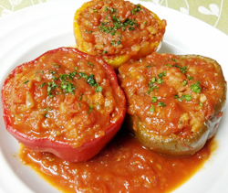

パプリカのパエリア詰め
トマトソース煮
トマトソース煮
- 調理時間：60 分
- （一人当たり）
- カロリー：520kcal
- たんぱく質：12.2g
- 脂質：16.3g
- 炭水化物：80.6g
- 塩分：2.5g


＜2人分＞
- パプリカ（3色）
- 3個
- パセリ
（飾り用）（みじん切り） - 少々
- ・トマト
（湯むきしてザク切り） - 300g
- ・玉ねぎ（みじん切り）
- 1/4個
- ・オリーブオイル
- 少々
- ・塩、コショウ
- 少々
- ・ケチャップ
- 小さじ1～2
☆トマトソース
- ・米
- 1合
- ・シーフードミックス
- 50g
- ・玉ねぎ（みじん切り）
- 1/4個
- ・塩、コショウ
- 少々
- ・スープの素
- 1/2個
- ・オリーブオイル
- 少々
☆パエリア風ごはん


- 【パエリア風ごはんを炊く】
1.米は洗ってザルにあげておく。玉ねぎはみじん切り、シーフードミックスは湯通しする。
2.フライパンに油をしき、玉ねぎ、米が透明になるまで炒め、シーフードミックスも加える。
3.炊飯器に移し、水、塩、コショウ、スープの素を入れ、炊飯器で通常通りに炊く。 - 【トマトソースをつくる】
1.鍋にオリーブオイルをしき、玉ねぎを炒める。ざく切りにしたトマトを加えて煮込む。
2.塩、コショウ、ケチャップで味をととのえる。 - 【仕上げる】
パプリカはヘタをおとし、種とワタを取り除く。 - パプリカに炊いたごはんを詰め、オーブンでパエリアに焼き色がつく程度に焼く。
- ④を②の鍋にいれてトマトソースで煮からめる。
パプリカのパエリア詰め
トマトソース煮
真夏の太陽をいっぱいに浴びた出回り期のトマトのおいしさは格別です。けれど旬のトマトもそろそろ名残の時期。安いトマトをたくさん買って、ソースにしておけば、いつでもトマトのおいしさを楽しむことができます。トマトは煮込むと、甘味が強くなり、うま味も濃くなります。トマトのうま味成分にはアミノ酸が豊富に含まれていますので、多品目の食材と調理すると相乗効果で料理がおいしくなります。
作ったトマトソースは小分けにして冷凍保存しておくと便利です。冷凍で1カ月ぐらいを目安に使い切りましょう